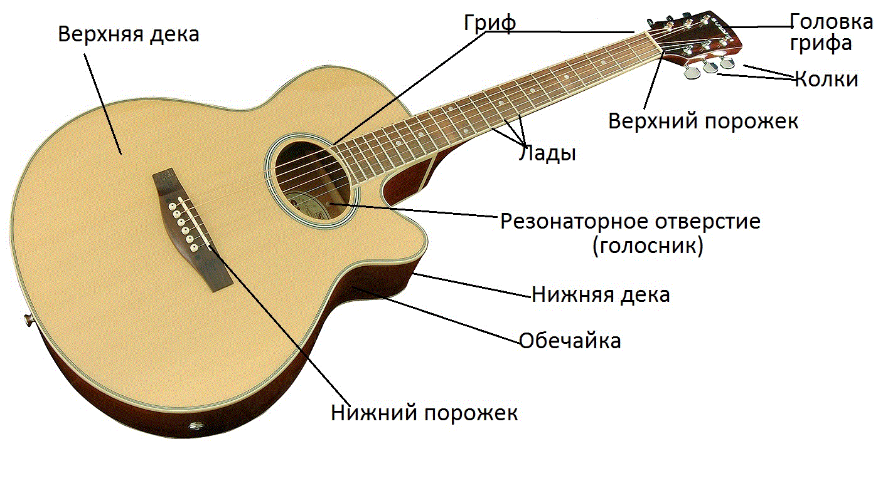

Урок 1 — База и гитара
Здесь мы познакомимся с акустической гитарой, её частями и основами игры. Ниже место для фото гитары:

Основные части гитары: корпус, гриф, лады, струны, колки, порожки. Каждый элемент важен для правильного звука.
Как зажимать аккорды
Ниже место для фото, где показано правильное и неправильное зажатие аккордов:

Обхватывавем гриф полностью и зажимаем кончиками пальцев.
Am
Dm
C
G
E
H
Не забывайте зажимать струны нежно, не давя слишком сильно, и избегать приглушения соседних струн.
Первый бой
Бой для изучения: вниз ↑ вверх ↑ * ↑ Щелчок (*) делаем мягко большим пальцем по струнам, создавая приглушение.
↓ ↑ * ↑
Задача: сыграть "Звезду по имени Солнце", перебирая и меняя аккорды:
Am
→ Dm
→ С
→ G
Длительность: 1-2 недели